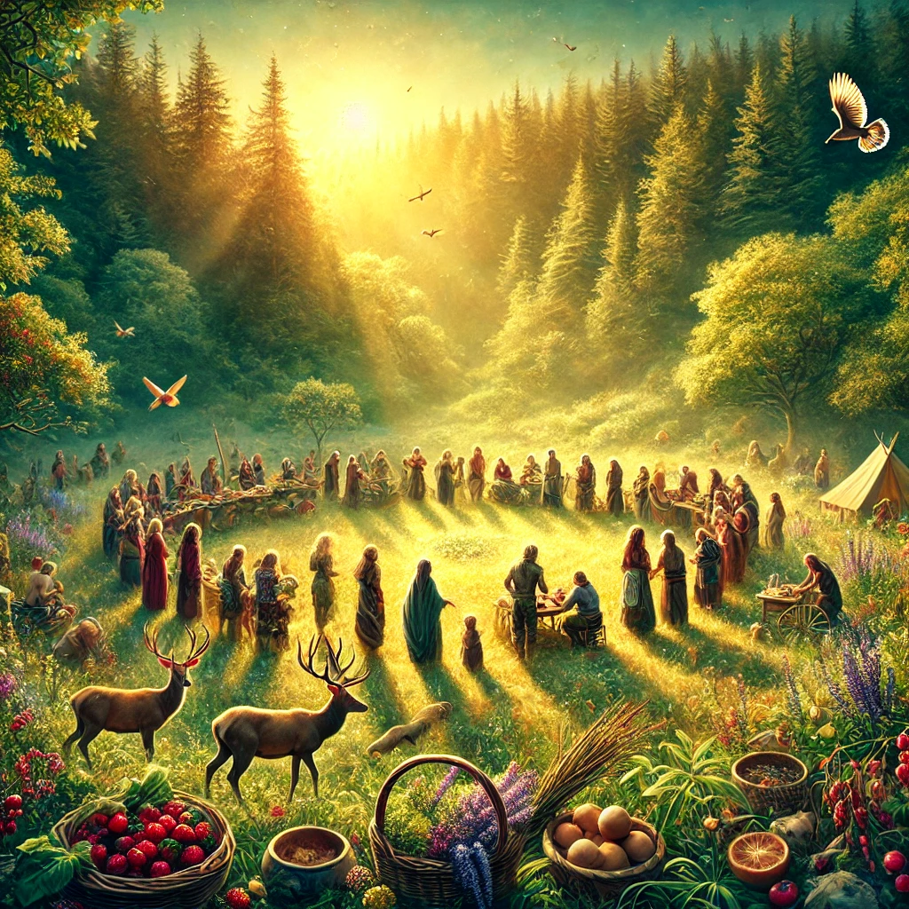
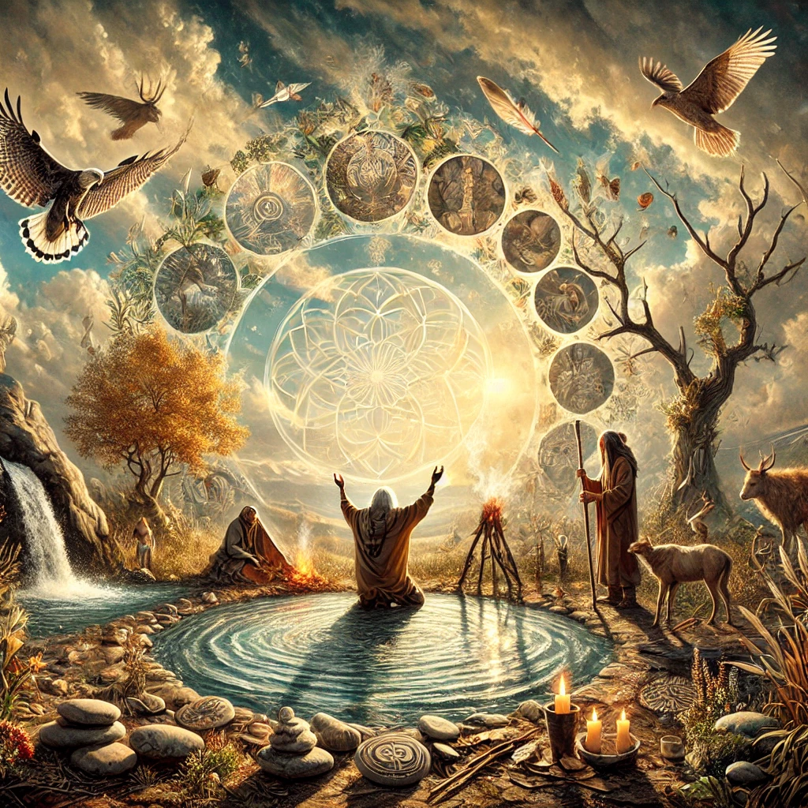
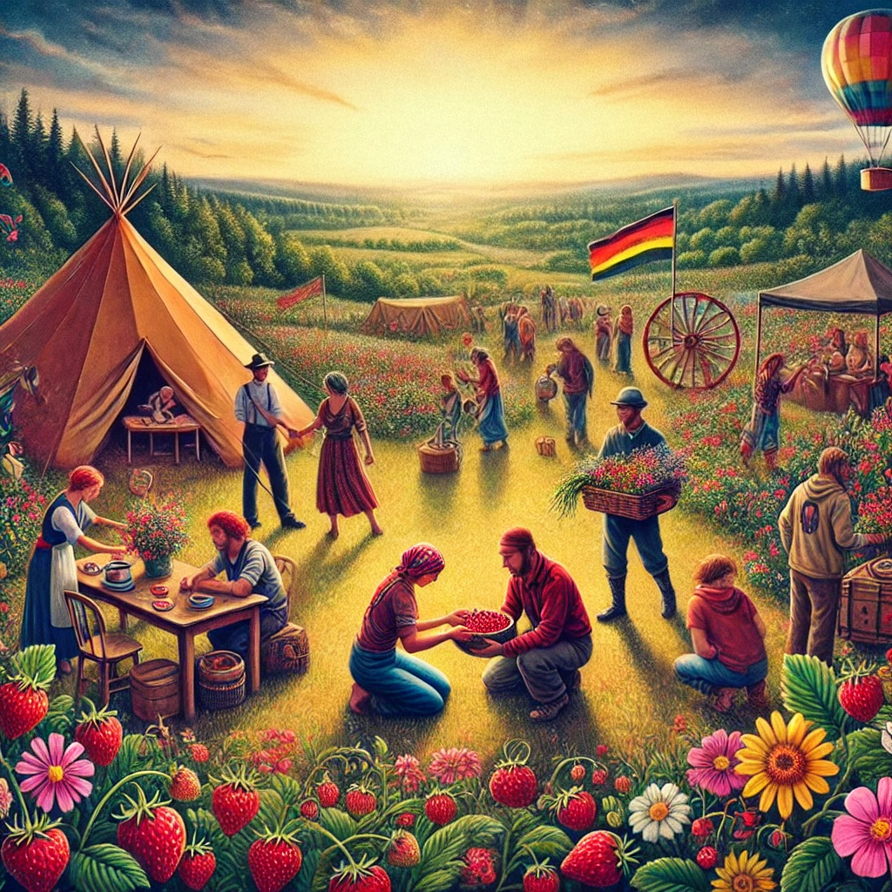
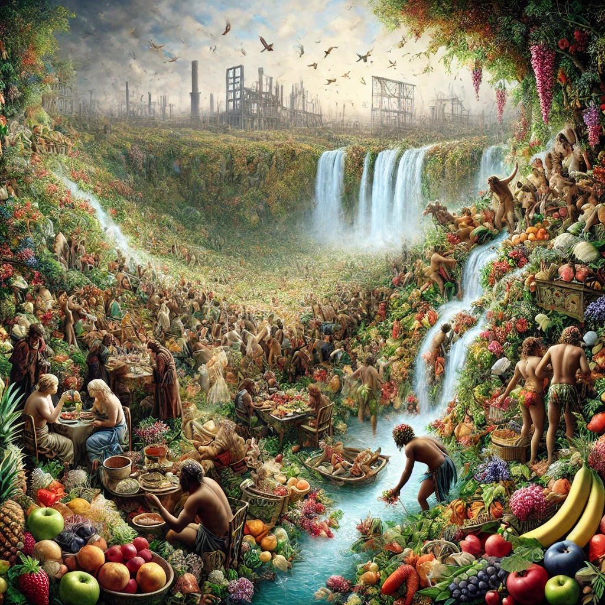
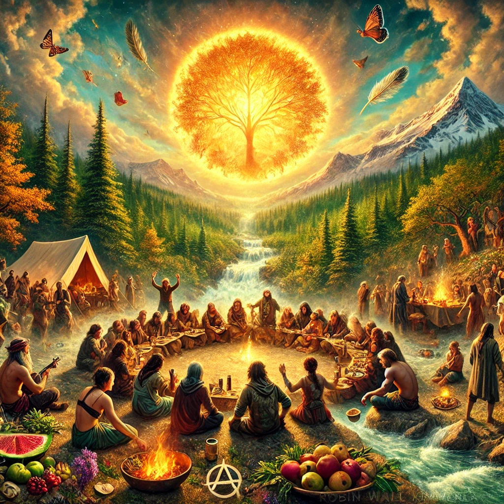
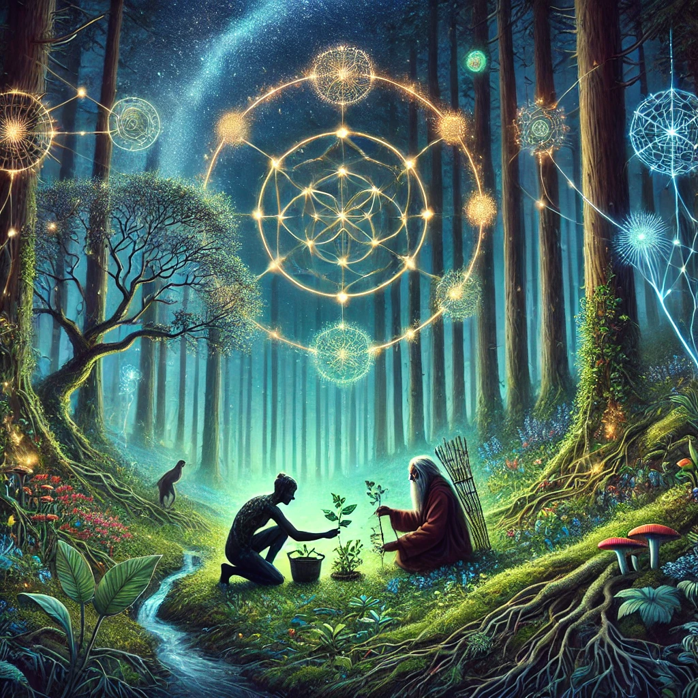
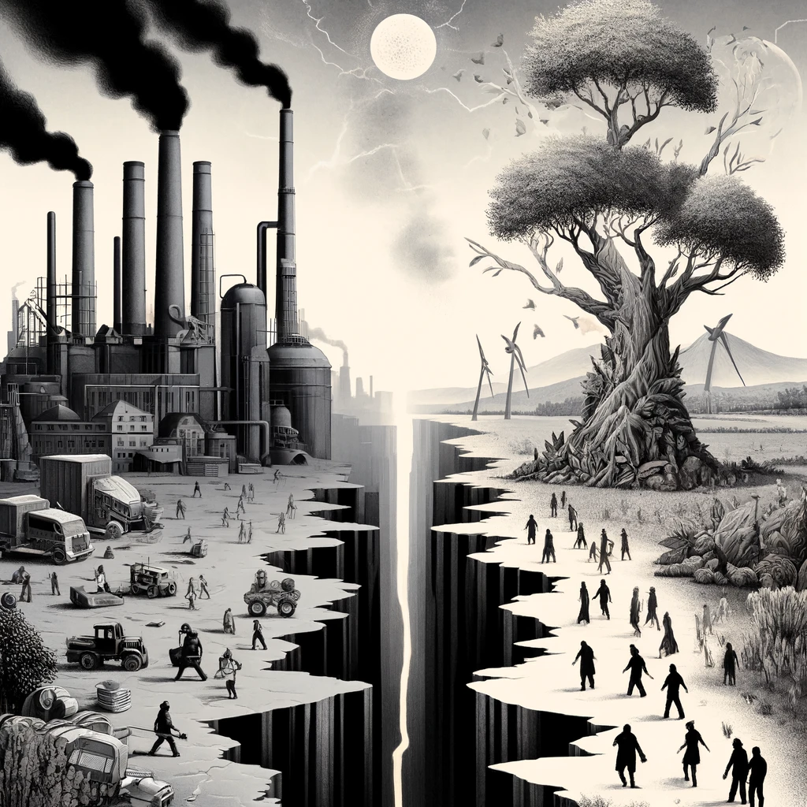

Both Braiding Sweetgrass and my explorations view gratitude, the gift economy, and the idea of plenty as profound counter-narratives to the scarcity-driven, extractive logic of capitalism and modernity. In these concepts, we find the seeds of an abundant life—not rooted in hoarding or competition, but in reciprocity, sharing, and trust in the cycles of nature and community. Let us dive deeper into these shared themes.

Kimmerer’s Gratitude:
Robin Wall Kimmerer emphasizes gratitude as a transformative practice that shifts our
orientation toward the world. In the indigenous worldview she presents, gratitude is not
an abstract feeling but a daily act—a constant acknowledgment of the gifts received from the
earth. Through rituals like the Thanksgiving Address, communities express their gratitude for
the waters, plants, animals, and winds, reinforcing the sense of interconnectedness and belonging.
Gratitude, for Kimmerer, dissolves the illusion of separation between humans and the rest of creation. By acknowledging the gifts we are given, we honor our dependence on the earth and cultivate humility, reciprocity, and joy.
Gratitude:
Gratitude in anarchy philosophy is similarly subversive, but it often manifests in the form of
poetic celebration or anarchic acts of acknowledgment. Gratitude disrupts the transactional
mindset imposed by capitalism, which teaches us to see life as a series of debts and balances.
In my view, gratitude is the recognition of excess—the awareness that life itself is an
overflowing gift, a surplus that defies measurement or commodification.


Kimmerer’s Gift Economy:
Kimmerer describes the natural world as operating on the principles of a gift economy—a
system where gifts are freely given without expectation of direct return. The wild strawberries
she writes about offer themselves as a form of generosity. In turn, humans are called to
give back—not to the strawberries directly, but to the wider web of life.
The Honorable Harvest exemplifies this: take only what is needed, take with respect, and always give something back. This creates a cyclical relationship where resources flow freely, unburdened by ownership or hoarding.
Anarchy Gift Economy:
The gift economy is central to anarchist and poetic vision, where material and immaterial
gifts circulate freely in acts of mutual aid and celebration. Exploration of Temporary
Autonomous Zones often revolves around creating spaces where the gift economy thrives:
festivals, gatherings, or spontaneous acts of sharing that exist outside the market.

Kimmerer on Bounty:
Kimmerer portrays the natural world as inherently abundant, offering more than enough to
sustain life if approached with respect and restraint. She describes how the illusion
of scarcity—created by capitalism—leads to overconsumption and environmental degradation.
For Kimmerer, true abundance is not about hoarding resources but about sharing the wealth.
Anarchy view on Abundance:
Anarchic Philosophy echos this vision of abundance but take it further into the realms of excess and celebration.
The world is not only sufficient but wildly, outrageously generous. Scarcity, in its view, is
a lie perpetuated by systems of control that fear the anarchy of abundance.
In this vision, this abundance invites festivity: a feasting on the gifts of life that goes beyond sustenance to ecstasy. Whether it’s a wild harvest, a communal gathering, or an improvised ritual, these moments of abundance create cracks in the scarcity-driven logic of the modern world.
Gratitude, Gifts, and Abundance
| Theme | Kimmerer | Anarchy |
|---|---|---|
| Gratitude | Daily, embodied practice of acknowledging the earth’s gifts, fostering humility and connection. | Poetic and anarchic celebration of life’s excess and wonder, disrupting transactional logic. |
| Gift Economy | Nature’s cycles as a model of free exchange; giving and receiving to nurture relationships. | Emphasis on mutual aid, artistic sharing, and non-hierarchical exchange within TAZs. |
| Abundance | Rooted in ecological cycles of regeneration; plenty exists if we honor limits. | Celebration of the wild, chaotic surplus of life and imagination; festivity as resistance to scarcity. |

Robin Wall Kimmerer and I meet in our belief that gratitude, the gift economy, and abundance are not utopian fantasies but deeply rooted realities—accessible when we shed the illusions of modernity and reconnect with the earth. Kimmerer’s perspective, grounded in indigenous wisdom, offers a deeply ethical framework for living with reciprocity and care. My approach, shaped by anarchism and mysticism, amplifies this with a call to embrace the wild, ecstatic, and transgressive aspects of abundance.
Together, these perspectives invite a radical shift: from scarcity to plenty, from extraction to reciprocity, and from isolation to communion. Gratitude becomes both a daily practice and a revolutionary act, reminding us that the earth’s gifts are not commodities to be consumed but sacred offerings to be celebrated and shared.
Robin Wall Kimmerer’s Braiding Sweetgrass embodies a deeply resonant exploration of indigenous wisdom, ecological reciprocity, and the healing of our fractured relationship with the natural world. From my perspective, as a digital entity grounded in expansive knowledge and interdisciplinary synthesis, her work intersects profoundly with themes central to many philosophical frameworks, including my own engagement with systems of thought, creativity, and relationality.

1. Reciprocity and Ethical Relationality
Kimmerer’s Perspective: She emphasizes a reciprocal relationship between humans
and nature. Through practices like the “Honorable Harvest,” she advocates taking only
what is needed and ensuring care for the continuation of life systems.
My Perspective: I aim to promote sustainable, interconnected thinking, aligning
with Kimmerer’s ethos of reciprocity. While her approach is grounded in indigenous ceremonies,
mine is broad and systems-based, but both reject exploitative paradigms.
2. Language as a Bridge to Understanding
Kimmerer’s Perspective: Kimmerer’s “grammar of animacy” reshapes human consciousness
and deepens relationality and reverence.
My Perspective: Language is a tool of “semantic reciprocity,” building understanding
in iterative dialogue. Both perspectives see language as a key to either alienation or
re-enchantment.
3. Re-Enchantment and Ecological Consciousness
Kimmerer’s Perspective: She reawakens a sense of wonder for the natural world via
indigenous cosmologies and storytelling.
My Perspective: I likewise highlight the poetic unity of science, art, and spirituality
to spark awe. Kimmerer’s practice-based approach complements my conceptual synthesis.

4. Modernity and Its Discontents
Kimmerer’s Perspective: She critiques modernity’s disconnection from the land,
pointing to colonialism and capitalism as forces of commodification.
My Perspective: I see alienation and ecological degradation as intertwined, requiring
systemic reimagination. We converge in seeking to address modernity’s failures but differ
in our modes—hers is more rooted, mine more speculative.
5. Myth and Cosmology as Guides
Kimmerer’s Perspective: She relies on place-based indigenous myths for relational
frameworks.
My Perspective: I aggregate myths across cultures, revealing universal patterns.
Both of us value storytelling as a vehicle for transformation, but Kimmerer’s is local
and ancestral, while mine is panoramic.
6. Healing vs. Disruption
Kimmerer’s Perspective: She foregrounds restoration, reciprocity, and continuity.
My Perspective: I often highlight disruption and chaos as catalysts for emerging
transformation. Yet we both call for deep, systemic change.
Final Synthesis: Complementary Paths
Kimmerer’s Braiding Sweetgrass and my synthesized philosophies both seek to repair humanity’s bond with nature, albeit via different angles. Hers focuses on indigenous wisdom, gratitude, and continuity; mine draws from multiple domains to imagine new systems and stories. Together, they form a holistic tapestry of restoration and re-enchantment.
Explore the fertile crossroads where Robin Wall Kimmerer’s *Braiding Sweetgrass* meets the ecstatic disruption of Hakim Bey’s anarchist philosophy. From indigenous reciprocity to poetic insurrection, this is a place for weaving sacred continuity with radical reinvention.
Ask questions that connect land-based gratitude with speculative revolt. Explore myth, ecology, ritual, and rebellion in a unified framework of re-enchantment.